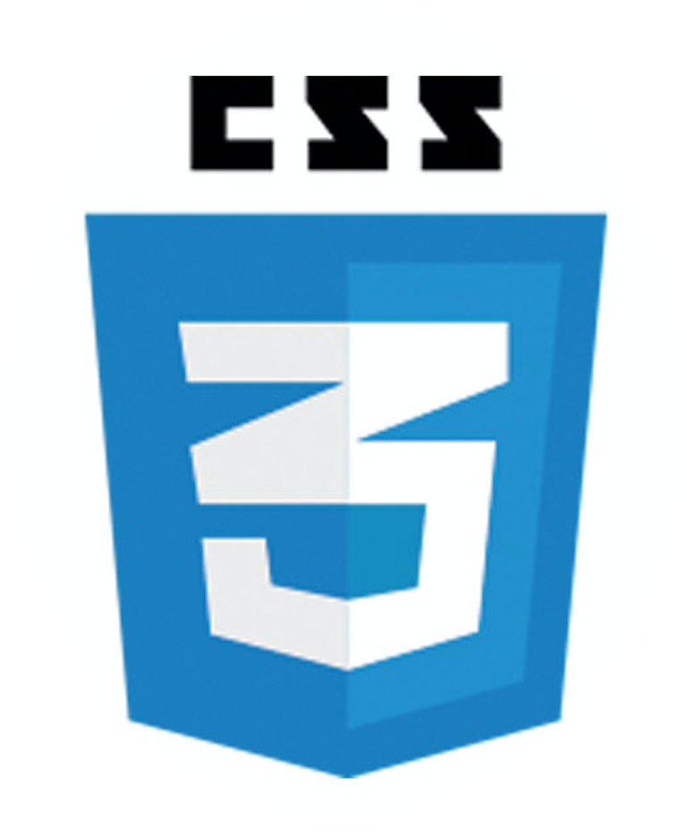
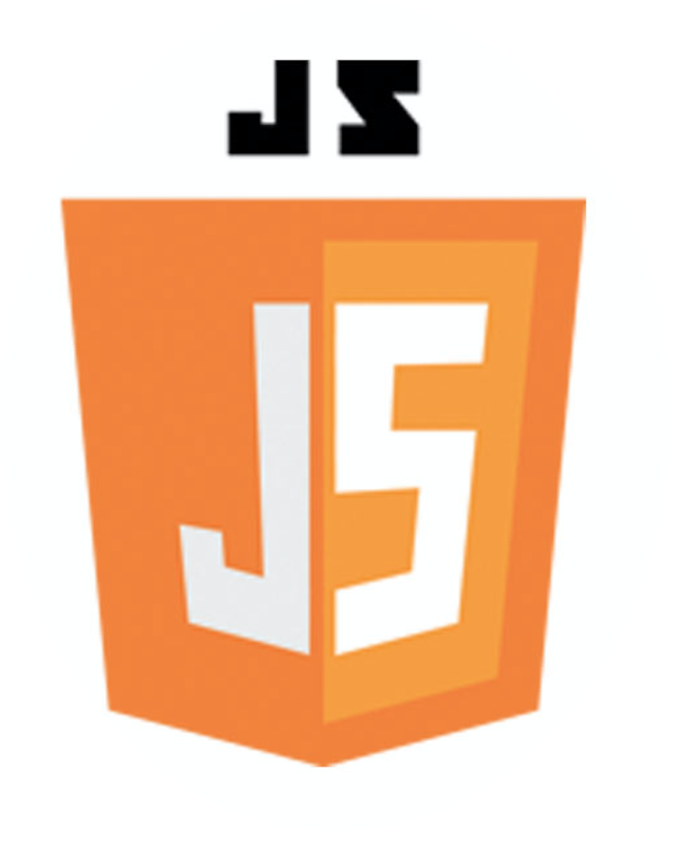

Born in Colombia, I have been living in Miami for over 17 years and frequently travel abroad to Latin America, Europe and Africa.
After 10 years of experience in Interior Design, hospitality and Project Management, I am venturing into the world of web development to better reach clients and showcase my skills.
I have demonstrated great ability to assist and coordinate companies team with the execution of multiple sales. Working with BELT, I have developed relationships for projects with Portuondo- Perotti Architects, Eolo Design, Sanandres Construction and Bali Designs.
Always seeking professional challenges, I am eager to contribute to the web development community. I work diligently to provide excellence in all my professional endeavors and have earned a reputation of integrity, initiative, and results-driven work ethic.
Incorporating User Interface Design, HTML, CSS, Javascript, Node.js and Ruby/Rails, to my vast experience in Photoshop, Illustrator will help me to make a great impact on each project I am working on.

